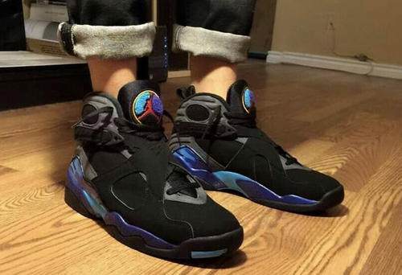

Air Jordan VIII

© 1993
耐克于1993年2月推出的乔丹8代处处体现了当时注重科技的设计思想。乔丹8代在外形上取得了重大的突破，最突出的是鞋面子的交叉粘扣设计，加强了鞋面的稳定性。中底吸收跑鞋的设计思想，大量缩减了橡胶材料，减轻了鞋的重量，鞋舌采用了毛巾材料加飞人标志。后跟侧面和鞋底中部的抽象画图案为乔丹8代增添了艺术色彩
（乔丹8代兼具了合脚性及支撑性，它以交叉鞋带固定系统，用AirHuarache弹性内底包裹脚部，展现了前所未有的适足性。在外底的配置上将其左右分开，大胆的挖空中央部分，使其达到了轻量化的目标。 它让乔丹连续七年获得得分王，NBA三连霸的美梦也得以实现。乔丹并于决赛中创下令人惊讶的平均每场41分的新纪录。
但乔丹在这年夺得3连冠以后，突然宣布退役，很多球迷以为乔丹在再也不会重返赛场，所以认定乔丹8代是乔丹赛场上穿着的最后的一款，因此乔丹8代也创造了93年耐克公司的销售纪录。乔丹8代为在乔丹第一次退役以前推出的最后一款鞋，因此而在乔丹系列中具有特殊意义。
1992-1993赛季乔丹平均每场比赛得32.6分，追平张伯伦连续7次获得得分王的纪录。他在这个赛季拿到了职业生涯的第20000分，成为创造这一纪录第二快的球员。 1993年6月20日，乔丹率公牛队在总决赛中以总比分4-2击败菲尼克斯太阳队，创下公牛王朝首个三连冠。乔丹在总决赛中平均每场得到41.0分创下总决赛最高得分纪录。乔丹也毫无争议地当选为当年总决赛的MVP，这使他成为历史上首位连续三年获得总决赛MVP的球员。